New challenge, acquire all DevOps certifications in 3 popular public cloud providers, Azure is the first target of mine. Let's fucking go!!!
I will try to refer to AWS as much as I can because AWS is the first cloud I learned.
This article could contain some wrong information since I'm new to this, correct me if I'm wrong, thanks xD
Prepare for the exam
Useful resources:
A lot of image I take from https://learn.microsoft.com/. I think next article better use link instead copy to this repo and include to article xD
Resources must watch (Yeah, it is a lot if you never been Azure portal before like me!):
- AZ-104: Prerequisites for Azure administrators - Provided by Microsoft
- AZ-104: Azure Administrator - Provided by Microsoft
- AZ-104 Microsoft Azure Administrator - Complete Exam Prep - Scott Duffy - Not recommend unless you are working daily with Azure.
- AZ-104 Preparation Done Wrong | What Top Scorers Do Differently
- Vietnamese - Kinh nghiệm thi chứng chỉ AZ-104: Microsoft Azure Administrator
- Prepare for Microsoft Certification Exam AZ-104: Microsoft Azure Administrator - Provided by Microsoft
Some section need to be understand before taking the exam.
- Domain 1 — Identity & Governance (20–25%)
- Domain 2 — Compute (20–25%)
- Domain 3 — Storage (15–20%)
- Domain 4 — Networking (15–20%)
- Domain 5 — Monitor & Backup (10–15%)
- Exam Tip/Tricks
- Secure Weapons
- Taking the Exam!
Ok, let's take them one by one!
Azure physical infrastructure
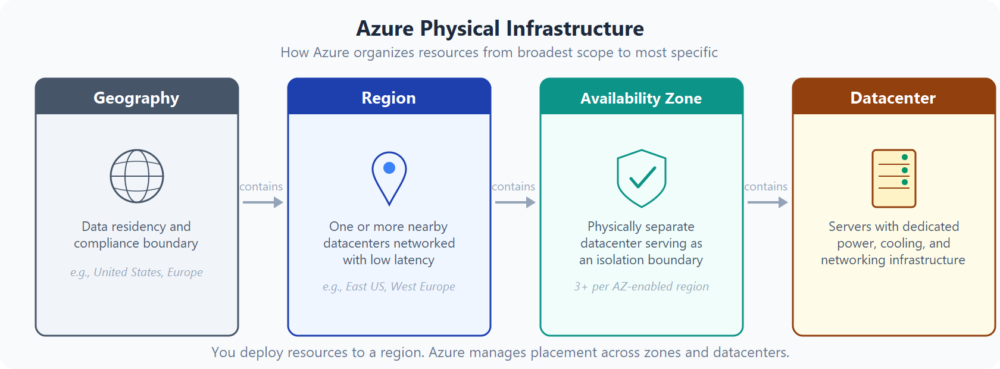
Availability Zones
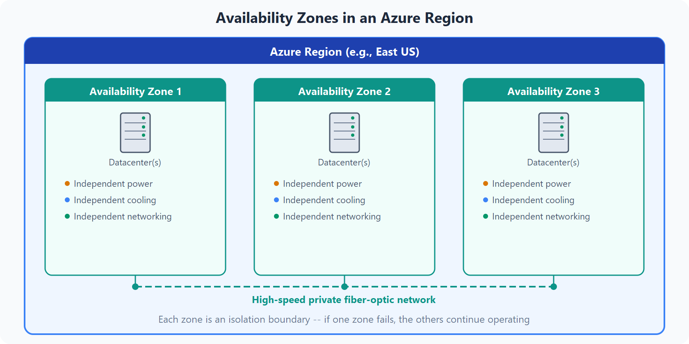
Use availability zones for your workloads
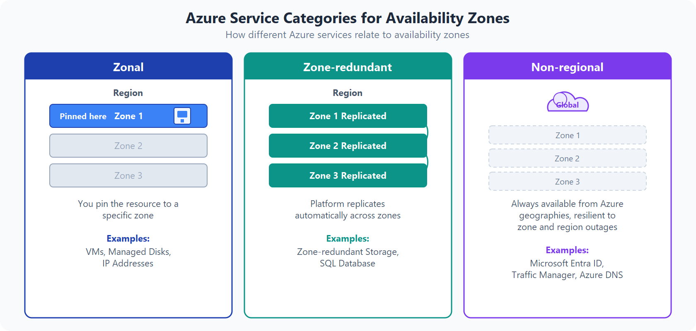
Domain 1 - Identity & Governance
Hierarchy
We can simply understand it by following (Generated by Sonnet 4.6 xD):
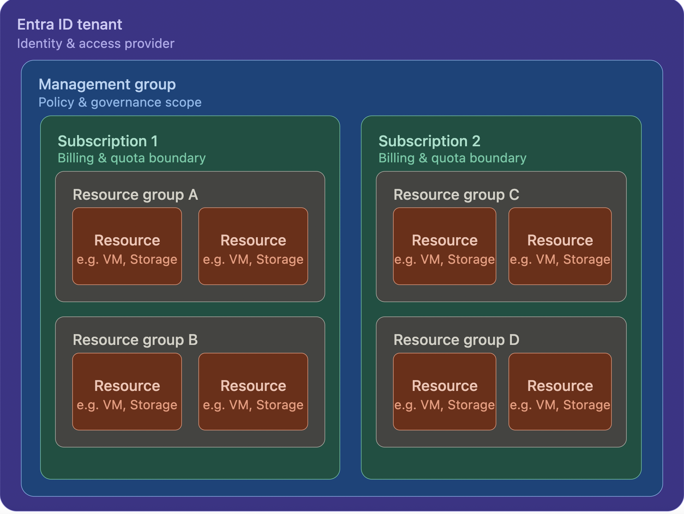
RBAC
I like this fucking picture that explain everything!
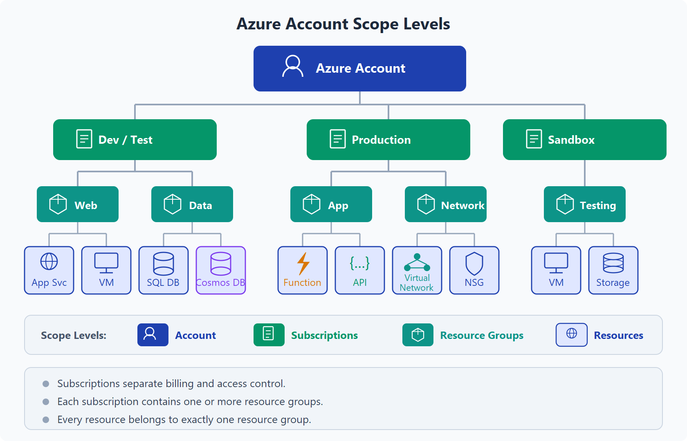
And even more with this!
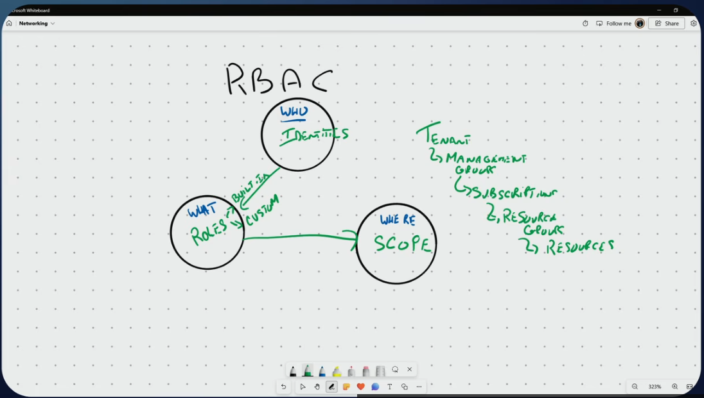
RBAC = IAM = Who --> What --> Where
Here are common built-in roles of Azure RBAC:
| Role | Permissions |
|---|---|
| Owner | Full access + assign roles |
| Contributor | Full access, without assign roles |
| Reader | View only |
| User Access Administrator | Manage access only |
Resource reference:
https://learn.microsoft.com/en-us/azure/role-based-access-control/overview
Inheritance: very very very important, assigned 1 time in Management Group, all sub resource inherit.
Azure Policy vs IAM Policy
Totally different versus AWS IAM Policy. Azure Policy enforce rules on resources, not permissions.
| AWS | Azure |
|---|---|
| IAM Policy = who can do what | RBAC = who can do what |
| SCP = restrict permissions across accounts | Azure Policy = enforce rules on resources |
Example about Azure Policy:
- VM only created in Southeast Asia.
- Storage Account must enable encryption.
- All resources must have tag
Environment - VM can not create with SKU 700 core and 12 Tb ram xD
Management Groups
Like AWS Organization, group Subscription for apply policies/RBAC
Root Management Group
├── Production
│ ├── Subscription: prod-app1
│ └── Subscription: prod-app2
└── Development
└── Subscription: dev-sandbox
Policy/RBAC assigned in Management Group, inherit to all subscription. Easy to understand, right?
Resource reference:
https://learn.microsoft.com/en-us/azure/governance/management-groups/overview
Little concept comparison
| Concept | AWS | Azure |
|---|---|---|
| Identity provider | IAM | Entra ID (Azure AD) |
| Permissions | IAM Policies | RBAC Role Assignments |
| Resource rules | Service Control Policies | Azure Policies |
| Account grouping | Organizations and Organization Units | Management Groups |
| Billing boundary | Account | Subscription |
| Resource grouping | Tags only | Resource Groups + Tags |
| Delete protection | Termination protection (EC2) | Resource Locks (any resource) |
Entra ID (Azure AD) B2B/ B2C
B2B: Business to Business
B2C: Business to Consumer
- B2B: invite user from external tenant (Different Entra IA or Microsoft Account), that user still using their owned credential of their ORG to login, our Entra ID only create Guest Account in our tenant. Use Case for partner company, contractor, vendor that need access our resource
- B2C: User can login via third party provider like facebook, google, github via Azure AD B2C tenant (not normal Entra ID), used for application that have customer-facing. Use case for our application allow end-user sign-up/sign-in
System-Assigned Managed Identity (SAMI) vs User-Assigned Managed Identity (UAMI)
Resource reference:
https://learn.microsoft.com/en-us/entra/identity/managed-identities-azure-resources/overview
| SAMI | UAMI | |
|---|---|---|
| Lifecycle | attach with resource, when delete resource, SAMI will be delete also | Don't care, still stay after resource deletion xD |
| Reuse | 1 resource → 1 identity | 1 identity → multiple resources |
| When | Throwaway, 1-1 with VM/App Service | Reuse identity between multiple resources |
Control Plane vs Data Plane
Subscription Owner
├── Control plane: create/delete/manage resource (Microsoft.Storage/*, Microsoft.KeyVault/*)
└── Data plane: No — must assign role explicitly
For example:
- Owner can create Storage Account
- Owner access blob (Binary Large Object) -> need role "Storage Blob Data Reader"
- Owner can create Key Vault
- Owner access secret -> need role "Key Vault Secrets User"
Resource Reference:
Managed Identity + Key Vault
Pattern:
App Service → [SAMI] → Key Vault Reference → Secret
Setup step:
- Enable SAMI in App Service
- Assign role Key Vault Secrets User for managed identity in Key Vault
- App setting uses
@Microsoft.KeyVault(SecretUri=...)
No need to store credentials anywhere, managed identity auto get token from Azure AD
K8s analogy: This pattern is identical to Workload Identity (AKS/GKE) or IRSA (EKS — IAM Roles for Service Accounts):
K8s: Pod → [ServiceAccount] → IAM Role / Managed Identity → AWS/Azure resource
Azure: App Service → [SAMI] → RBAC role → Key Vault secret
Same idea: workload is bound to an identity, the identity is granted permissions, and the runtime auto-exchanges tokens (via OIDC / IMDS endpoint). Code only calls the SDK — no secrets or keys needed anywhere. When Pod/App restarts, the identity persists — no manual credential rotation.
It also applies to in-cluster K8s RBAC: a Pod runs as a ServiceAccount, that SA is bound via Role/RoleBinding (or ClusterRole/ClusterRoleBinding), and calls to the K8s API server (default endpoint https://kubernetes.default.svc inside the Pod) are authenticated using the projected token at /var/run/secrets/kubernetes.io/serviceaccount/token. Same identity-binds-to-workload pattern, just scoped to the cluster instead of cloud resources.
Resource Reference:
- Use Key Vault references for App Service and Azure Functions
- How to use managed identities for App Service and Azure Functions
- Azure AD Workload Identity for AKS
Conclusion and Gotchas
- RBAC = IAM Roles.
- Azure Policy = Service Control Policies (but have more flexibility)
- SAMI is often prefer because it will not make
orphaned identitiesxD - Subscription owner can not read KV secret by default. Owner only have control plane permissions — need to self-grant data plane role (e.g.
Key Vault Secrets User) if access is needed, applies regardless of permission model, but RBAC is recommended! - Key Vault Contributor = manage vault configuration (control plane), NOT read secret
- Key Vault Administrator = full data plane access (read/write/delete secrets, keys, certs)
- For vault access model best practice: pick RBAC!
- Microsoft Identity Manager (MIM) = bridging/sync identity store on-premises (like AD FS) with Microsft Entra ID
- When need to assign permission to access Azure resource, use security group.
- When need to create team collaboration (email, teams, sharepoint), use M365 group (M365 group could be used for assign RBAC but primary use still collaboration!)
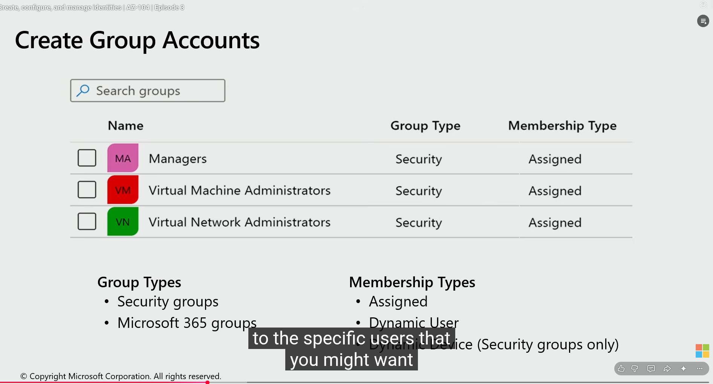
Resource Reference:
Enhanced after fail first exam
- 3 different type of group: cloud, hybrid and guest group?
- Microsoft entra ID has different licenses: Free, P1, P2 and Governance. Like PIM for only P2 license, SSPR required P1.
- No fucking break inheritance. Definations are group of policies, RG can't be nested
- User type can be: Member or Guest. Dynamic membership is a rule if user have some specific attribute that matched with dynamic membership, they will automatically added to that group, that is why it called Dynamic Group I guess! Group with membership assigned is common group that Admin user select member manually.
- Administratives users can work which some parts of your organization. Administrative units allow you to segregate your directory such that certain administrators only have permissions to work on certain areas.
- Devices in Azure AD represent and manage physical devices used by users that access organization's resources. You can allow/block devices of specific users.
- Bulk Operations: Allow you create a lot of users from csv file.
- External Users: Can be understand as Guest User (Need to invite from user creation page) who's granted access to your organization's resources (Partners, vendors, contractors... who you need to collabrate with) and you don't want them to have an account in your Azure AD.
- Self service password reset: Allow member/group able to reset their pasword, default only Administrator have that feature.
- RBAC: not thing much new, default comes with over 90++ built-in roles.
- We can swap Storage Account from using Access Key to RBAC as well. And we can grant role/permission on various levels from the specific container, storage account, resource group.
- And yeah we can have a custom role, for example Sysadmin Group can be access to Storage,VM,Network. We create that role for example and only need assign Sysadmin user to that group for simple management. Custom role required Azure Entra ID license P1/P2 in order to get access to custom roles.
- Custom role defined with AssignableScopes, specify range(Management group, subscription or resource group) that role can be assigned.
- Interpret Access Assignments: additive union permissions of assigned role. Because RBAC have no fucking deny in role, so Contributor role will eat custom role that have some permission like in Contributor role
- Azure Account/User: a person(username, password, multi-factor) or a program (managed identity), basis for authentication.
- Tenant: represent of an org, usually with public domain name. Will be assigned a domain if not specified (example.onmicrosoft.com). It is a fucking dedicated instance of Azure Actice Directory, every Azure Account is part of at least one tenant! More than one account can be the owner in a tenant!
- Subscription: An agreement with Microsoft to use Azure services and how you are fucking to pay for that. All Azure resource usage gets billedd to the payment method of subscription (Free, PAYG, Enterprise agreements...). Not every tenant needs to have a subscription. Tenants can have more than one subscription.
- Resources: Nothing much to say about this... Account can be given read,update, owner rights to resources.
- Resource Groups: a way to organizing resources in a subscription. A Folder struct, all resources must belong to only one resource group.
- Subscription have option for Resource locks, that prevent you from delete any resource in subscription scope or resource scope or even more, for example specific Function App. It means no one would able to delete if the lock still exists! (Or control people have permission that able to delete). Lock type Read only, you are not able to change setting. So 2 types, remember this.
- We can restrict location access for specific resource or deny unencrypted HTTPS storage accounts as example of Policy. Policy definition is single policy, but Initiative is set of policies.
- Custom policy, you want may want to copy syntax from template first before create custom policy, because they are all ARM templates. And after create custom policy, assign to specific scope like resource group.
- Tags: Is one of important thing to manage resource on any public cloud provider, not only Azure.
- Move Resources: It can be move to another resource group/subscription/region.
- Manage policy by Powershell, mostly you can do everything like manage resource/policy in Portal via Powershell or CLI.
-
Subscription and Management Group: We can create new subsciption and put it under a management group
-
Remember about SSPR:
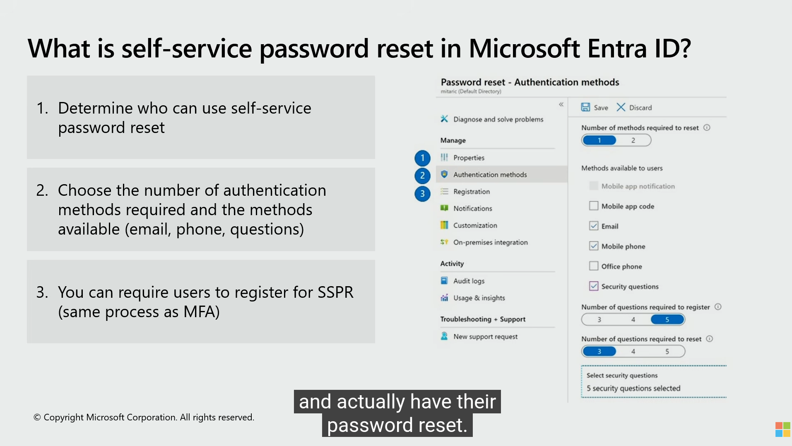
- Remember about this, even the tutor told you not to memory but I recommend to remember for time saving during exam!
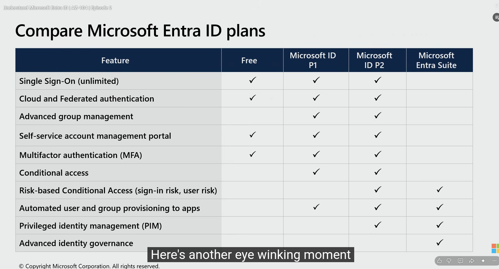
Domain 2 - Compute
Manage VM Sizes:
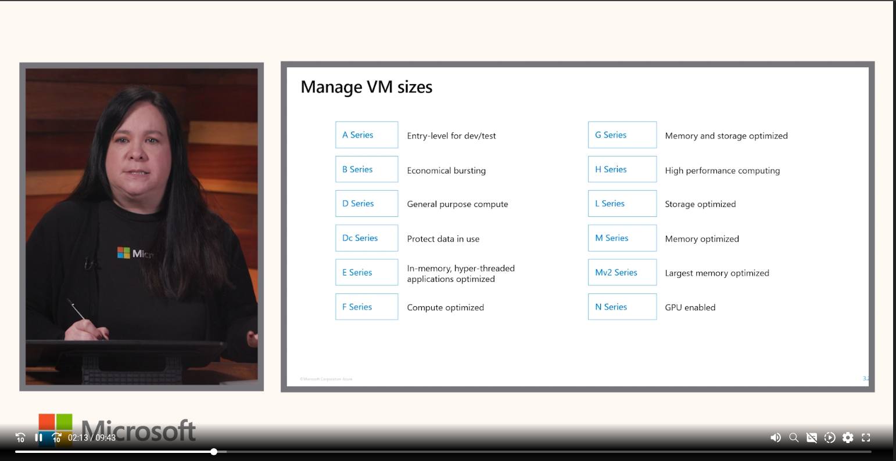
Virtual Machine (VM) Availability
| Availability Set | Availability Zones | VM Scale Sets (VMSS) | |
|---|---|---|---|
| Protection | Hardware/rack failure | Datacenter failure | Scale + HA |
| SLA | 99.95% | 99.99% | depend config |
| Use case | Legacy app, lift-and-shift | Production critical | Web tier, stateless |
| Region support | All region | Only region with zones | All region |
What is update domains: An update domain is a group of nodes that are upgraded together during the process of a service upgrade (or roll out). An update domain allows Azure to perform incremental or rolling upgrades across a deployment.
What is fault domains: A fault domain is a group of nodes that represent a physical unit of failure. Think of a fault domain as nodes that belong to the same physical rack. Yes, it is acting as rack!

Exam Gotchas
- SLA 99.99% -> must pick Zones, not Set
- Can not combine Availability Set and Availability Zones
- Availability Set: Fault Domain (FD): different physical rack (power, switch) — default 2, max 3 (some regions support 3)
- Availability Set: Update Domain (UD): group VM not going to restart together when Azure patch — max 20
Resource Reference:
VM Encryption
| Type | What | When |
|---|---|---|
| SSE (Server-Side Encryption) | Azure auto encrypt in storage layer | Default |
| ADE (Azure Disk Encryption) | Encrypt OS + Data disks at OS level (BitLocker/DM-Crypt), key in Key Vault | Compliance required OS-level encryption |
Picture I took from Azure Course
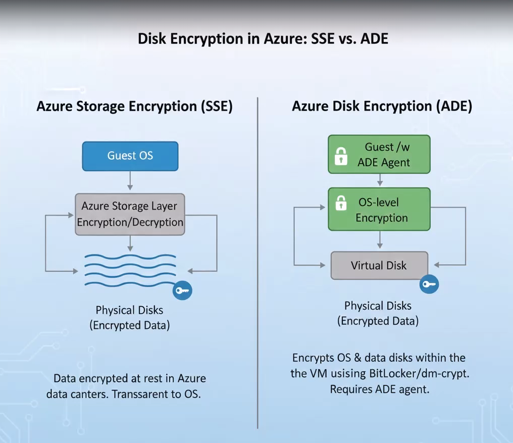
Verdict: SSE almost ready for everything. ADE only when compliance is required.
Resource Reference:
- Overview of managed disk encryption options
- Server-side encryption of Azure Disk Storage
- Azure Disk Encryption for VMs and VMSS
Note: ADE is scheduled for retirement on September 15, 2028. Microsoft recommends migrating to encryption at host for new VMs.
Deployment slot
Azure App Service deployment slots are live, distinct environments for your web apps. They allow you to test changes, warm up instances, and achieve zero-downtime deployments. By managing configurations independently, you can deploy updates to a staging slot, verify them, and instantly swap them into production. (from AI Overview when google search xD).
Reference: It is same like AWS Beanstalk
- Staging/Production Slot = AWS - Elastic Beanstalk Environments / AWS - Lambda Versions
- Swap Slots = AWS Swap Environment URLs
- Traffic % (Routing) = Weighted Aliases (Lambda) or Weighted Routing (Route 53 / ALB)
Some note for exam:
- Deployment slot is not available in Free/Basic plan. If question related to staging environment, pick Standard.
- After slot swap, both slot still running, for rolling back, just simple by swap back.
- App Service Plan = compute resource.
Resource Reference:
ARM (Azure Resource Manager) and Bicep
- ARM Template = Cloudformation Template of AWS
- Bicep still is ARM but better syntax (Azure only)
- Still prefer to use Terraform instead of this fucking shit when it comes to production!
- From Bicep to ARM (build/compile):
az bicep build --file main.bicep
# Output: main.json (ARM template)
# Directly
bicep build main.bicep
bicep decompile main.json
- From ARM to Bicep (decompile):
az bicep decompile --file main.json
# Output: main.bicep
Containers
Comparison between 3 services
| Service | What | When |
|---|---|---|
| ACI (Azure Container Instances) | Run 1 container fast, no fucking cluster | Dev/test, batch jobs, CI/CD runners |
| Container Apps | Serverless containers with scaling (KEDA inside), ingress. PAAS | Production apps, microservices |
| AKS | Managed Kubernetes | You know when.... |
Resource Reference:
Gotchas: Remember this fucking shit!
- strong / complete / security isolation / security boundaries = Virtual Machine
- light weight / fast / microservices = Containers
Domain 2.1 - ARM + Bicep
ARM template basic
Whenever we create VM or VNET, there is alway a section called "View automation template" in review + create resource.
ARM template section:
- $schema
- contentVersion
- variables
- resources
- parameters
- outputs
Good shit:
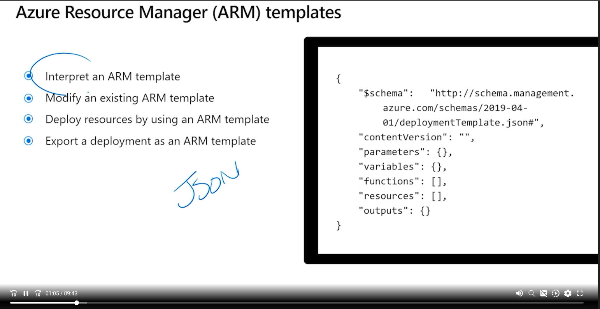
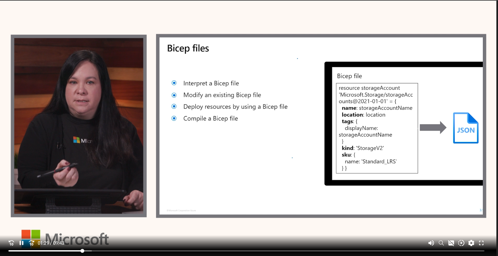
Minimum required to create virtual network:
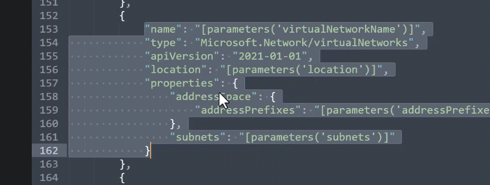
And yeah, we have dependsOn inside resources section which depend on other specific resource to create resource
We can create template spec then use it to deploy resources via Portal or cmd (Powershell)
ARM Templates Capture a Point in Time: This is basic, same like snapshot but without data, just spec/blueprint.
Bicep overview
We could deploy bicep to Azure via some cmd:
- Deploy to RG:
az deployment group create \
--resource-group <name-of-rg> \
--template-file main.bicep \
--parameters param1=value1 param2=value2
Domain 2.2 - Azure App Server
Web App/App Service
Nothing much to write, you upload your code, Azure run your code and help you to manage server.
It also have feature backup so you can restore from backup instead of upload code again for speed faster?
App Service Networking:
- Control inbound traffic (into app): Access restrictions, private endpoints, service endpoints, app-assigned address
- Control outbound traffic (out from app): VNet integration, Gateway-required Vnet integration....
- Custom domain: point DNS into app, not networking feature.
We also able to config cert and TLS for app service. They are auto renew at 45 days before expires. Limit: Not support wildcard, available with Basic plan and above.
Extra note for VM
- VM disk stored as? --> Page Blob (VHD of VM - Unmanaged Disk)
Domain 2.3 - Containers
Azure Container Instances
Quick to deploy but have limitation, should be used for testing demonstration. Can not scale.
ACI container groups
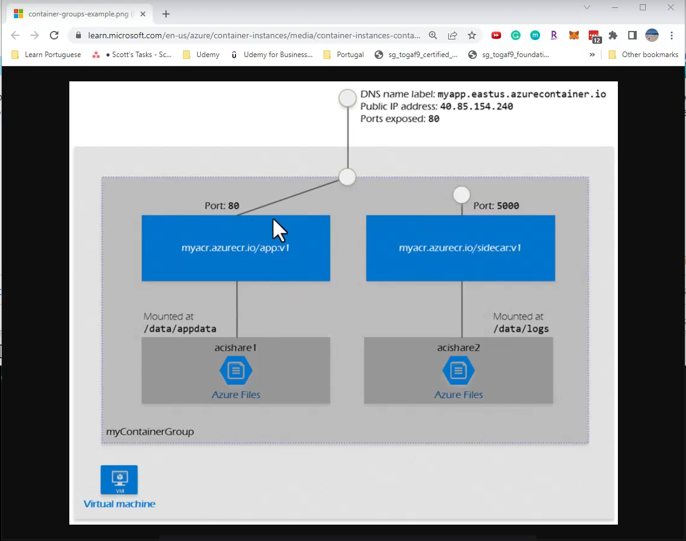
We can not create ACI via portal, must be via command line. I think it is like pod in k8s? xD
Azure container apps
Almost same like container instance but have more options like ingress settings, revision and replicas (like deployment slot in Azure App), scale based HTTP Traffic, Keda, manual.
Domain 3 - Storage
Azure Storage Account vs AWS S3 — Mental Model
AWS Azure
───────────────────────────────────────────────────
(No Need!) → Storage Account (wrap layer)
S3 Bucket → Blob Container
S3 Object → Blob
S3 Bucket Policy → Container Access Policy / RBAC
S3 Lifecycle Rules → Lifecycle Management
S3 Versioning → Blob Versioning
S3 Storage Classes → Access Tiers (Hot/Cool/Archive)
S3 Presigned URL → SAS Token
S3 Static Website → Static Website (in Blob)
───────────────────────────────────────────────────
EFS → Azure Files
SQS → Queue Storage
DynamoDB (simple use) → Table Storage
Key Differences:
| AWS | Azure |
|---|---|
| Create S3 bucket directly | Need to init Storage Account first, then create container |
| Each bucket have it owns settings | Storage Account contains setting for all services inside |
| Bucket name globally unique | Storage Account name globally unique, Blob container only need unique in internal Storage Account |
| Bucket policy per bucket | RBAC can be set at account or container level |
Example:
AWS:
- s3://my-images-bucket (Create)
- s3://my-backup-bucket (Create)
- EFS: my-team-share (Other service)
Azure:
- mystorageaccount
├── container: images (Like S3 bucket)
├── container: backups (Like S3 bucket)
└── fileshare: team-share (Like EFS)
Immutable vs Mutable Settings
Can not change after created:
- Storage Account name
- Location/Region
- Performance tier (Standard <---> Premium)
- Hierarchical namespace (For exam, but in fact we have migration tool)
Can be change after created:
- Redundancy (LRS/ZRS/GRS) - but limit
- Access tier (Hot/Cool)
- Network/Firewall rules
- Data protection (soft delete, versioning)
- Encryption settings
We need to pick Name, Region, Performance tier right for the first damn time!
Replication Types
In single region:
| Type | What | When |
|---|---|---|
| LRS (Locally Redundant) | 3 copies, 1 datacenter | Hardware failure |
| ZRS (Zone Redundant) | 3 copies, 3 zones | Datacenter / zone failure |
Cross-region:
| Type | What | When | Read from secondary? |
|---|---|---|---|
| GRS (Geo-Redundant) | 6 copies (3+3), 2 regions | Region failure | No, Never able to read from secondary, must failover first, after failover, secondary become new primary |
| RA-GRS (Read-Access GRS) | 6 copies, 2 regions | Region failure | Yes (always) |
| GZRS | ZRS primary + LRS secondary | Zone + region failure | No |
| RA-GZRS | ZRS primary + LRS secondary | Zone + region failure | Yes |
Pick replication by keyword:
| When | What |
|---|---|
| Disk/hardware failure, cheapest | LRS |
| Zone failure, within region | ZRS |
| Region down, data still available | GRS (If no continuously read) |
| Region down + can read secondary continuously | RA-GRS |
| Zone + region, highest availability | RA-GZRS |
| Available even if a region goes down and cost-effective | GRS (GRS cheaper than RA-GRS / GZRS) |
GZRS = Geo-Zone-Redundant Storage
Resource Reference:
- Azure Storage redundancy
- Change how a storage account is replicated
- Hot, cool, cold, and archive access tiers for blob data
- Grant limited access to data with shared access signatures (SAS)
AzCopy
Standalone CLI tool to copy data to/from Azure Storage. aws s3 cp / aws s3 sync equivalent.
Auth: azcopy login (Azure AD, RBAC) hoặc SAS Token embedded in URL.
| Command | When |
|---|---|
azcopy copy |
One-time copy/migration |
azcopy sync |
Incremental sync (like rsync), only new/changed |
Exam Gotchas:
azcopy syncdoes NOT delete by default — need--delete-destination=true- Cross-account copy is server-side — no local bandwidth used
- Standalone binary, no Azure CLI dependency
Resource Reference:
Exam Tricks for Storage Features (non-replication)
For replication keywords (LRS/ZRS/GRS/RA-GRS/GZRS/RA-GZRS), see the Replication Types section above.
| When | What |
|---|---|
| Data cannot be deleted/modified for compliance | Immutable storage (WORM - Write once read many) |
| Automatically move old data to cheaper tier | Lifecycle Management Policy |
| Share files between VMs (SMB) | Azure Files |
| Store VM disk | Managed Disk (Premium SSD/Standard SSD/HDD) |
| Cheapest storage for rarely accessed archived data | Archive tier |
| Restore accidentally deleted blob | Soft Delete |
| Grant temp access to a specific blob without sharing key | SAS token |
Hierarchical Namespace
Hierarchical Namespace converts Azure Blob Storage into Azure Data Lake Storage Gen2 (ADLS Gen2): - Directories are real (rename/delete folder without touching individual files) - Supports POSIX ACL permissions at file/folder level - Designed for Big Data / Analytics workloads (Databricks, Synapse, HDInsight) - Cannot be disabled once enabled - Object Replication requires Hierarchical Namespace to be Disabled
Enhanced after fail first exam
- Not related to exam but some region required to store data in their region, for example, when you are working with EU clients, you need to create storage account in EU region I guess.
- Redundancy type: Not all region have option for GZRS.
- Storage account advanced setting: Required secure transfer for REST API, it means you only can use HTTPS for interacting. For authentication we have 2 option storage account key access(enable by default) and microsoft entra authorization.
- Storage account access tier: So for more cheaper from store the data(Cool/Cold), the more expensive for operation(read/write) for example. And you can have a mix of access tier file, some files are hot, some files are cool/cold/archive.
- Storage account networking: Public access from all networks are not worth to mention. But public access from selected virtual network and IP address are (You h ave an option to add IP Address for public access in this case like test from your home?). And finally disable public access and use private access. Network routing, lets use Microsoft network routing by default. (Travel over a private network or Azure backbone network I guess).
- Storage account data protection: soft delete can be enable for blobs,containers,file shares as an option in this tab. And enable versioning for blobs, the more money you are going to pays xD
- Storage account encryption: This section is easy to understand xD
- We can generate SAS with assigned access policy. (Control how we access on file share).
- If enable (Entra ID/Azure AD), we can give specific user to have access read/write on specific containers.
- Object replication copied "asynchronously" from a source storage account to a destination account.
- For quick example with Azcopy, create a folder as destination, generate SAS token and get SAS URL, then:
azcopy copy "C:\my\file.txt" "https://blob-sas-url-here"
- And we have talking a lot about containers, one revelant to this fucking exam called file shares, we can understand it as fucking NFS (we have a tool to keep file sync between on-premises and Azure called Azure File Sync). Also Azure File can be backup as Snapshot.
- Which backup type does Azure Blob backup use? operational backup: Continuous backups
- Block Blob: Save common file (image, video, document..). Can be overwrite data.
- Append Blob: Append without modify/delete old data, useful for log data, monitoring logs, audit trails.
- Page Blob: Random read/write, common use case: Virtual Disk (VHD) for VM, database files.
- This is interesting:
. .core.windows.net/ /.....
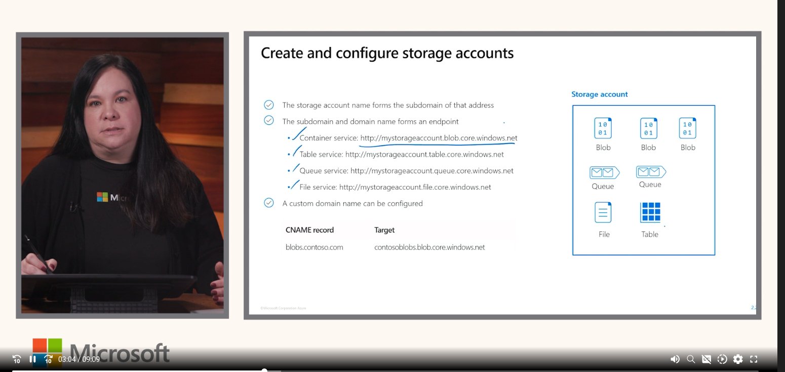
- Remember about what required to create SAS:
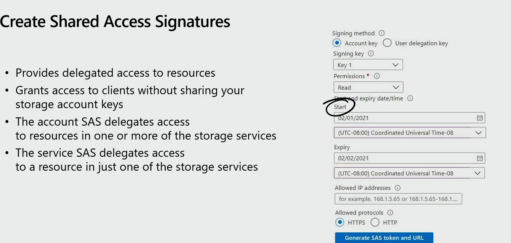
- Recommend practice for the exam:
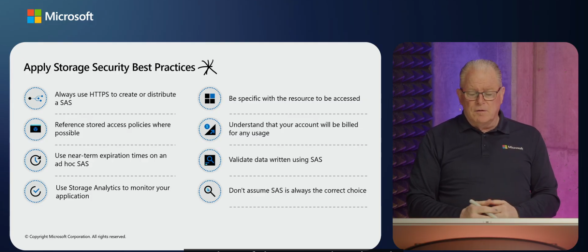
- Condition for Object Replication works
| Requirement | Source | Destination |
|---|---|---|
| Versioning | Required (Enabled) | Required (Enabled) |
| Change feed | Required (Enabled) | Not required |
| Hierarchical namespace | Must be Disabled | Must be Disabled |
Domain 4 - Networking
Resource Reference:
Quick Mapping from AWS VPC xD
AWS Azure
───────────────────────────────────────────────────
VPC → VNet
Subnet → Subnet
Security Group → NSG (Network Security Group)
Elastic IP → Public IP (Static)
ENI → NIC (Network Interface Card)
VPC Peering → VNet Peering
NAT Gateway → NAT Gateway
Route Table → Route Table
But there is still some little different. And we will go one by one
Subnet and Availability Zones (AZs)
- AWS: each Subnet locked into 1 AZ. To achieve HA, we need to create multiple subnet in different AZ.
- Azure: Subnet expanded to all AZ in single region. We can place VM in AZ 1, AZ 2, AZ 3 into same subnet.
NSG (Network Security Group) vs SG (Security Group) / NACL
- AWS: Use SG (applied at ENI/Instance) and Network ACL (NACL) (applied at Subnet)
- Azure: Use only NSG. NSG Can be applied both to NIC or Subnet. This is core for our exam.
- NSG is stateful, NACL is stateless
Stateful vs Stateless — what does it mean?
- Stateful (NSG, AWS SG): firewall remembers connections. When outbound traffic is allowed, the return traffic is automatically allowed — the firewall tracks the session in a connection table.
- Stateless (AWS NACL): firewall has no memory. Every packet is evaluated independently → you must define rules for both directions (inbound AND outbound).
Quick example — VM calling GitHub API (HTTPS port 443):
VM (random port 54321) --> [request] --> GitHub (port 443)
VM (random port 54321) <-- [response] <-- GitHub (port 443)
| NSG (stateful) | NACL (stateless) | |
|---|---|---|
| Rules needed | 1 outbound: Allow TCP 443 | Outbound: Allow TCP 443 + Inbound: Allow TCP from 443 -> ephemeral ports 1024-65535 |
| Forget the return rule? | Still works (auto-tracked) | Response dropped → connection fails |
That's why Azure only needs one NSG instead of AWS's two-layer SG + NACL model — simpler, no need to open wide ephemeral port ranges, less misconfiguration risk.
Resource Reference:
VNet Peering & Gateway
AWS Azure
───────────────────────────────────────────────────
VPC Peering (same region) → VNet Peering
VPC Peering (cross-region) → Global VNet Peering
VPN Gateway → Virtual Network Gateway
Transit Gateway → Virtual WAN / VNet Gateway
Site-to-Site VPN → VPN Gateway Connection
Direct Connect → ExpressRoute
| When | What |
|---|---|
| Connect 2 VNets same region | VNet Peering |
| Connect 2 VNets different region | Global Peering |
| On-prem <--> Azure (internet) | VPN Gateway |
| On-prem <--> Azure (dedicated) | ExpressRoute |
Resource Reference:
Azure DNS
AWS Azure
───────────────────────────────────────────────────
Route53 → Azure DNS
Route53 Hosted Zone (public) → Public DNS Zone
Route53 Private Hosted Zone → Private DNS Zone
Route53 Domain Registration → App Service Domain
Route53 Health Checks → Traffic Manager
Route53 Routing Policies → Traffic Manager
Azure separates health checks + traffic routings via Traffic Manager, not built-in like Route53.
Azure Load Balancing
AWS Azure
───────────────────────────────────────────────────
NLB (Layer 4) → Azure Load Balancer
ALB (Layer 7) → Application Gateway
CloudFront + ALB (global) → Azure Front Door
Route53 routing policies → Traffic Manager (DNS-based)
| Service | Layer | Use case |
|---|---|---|
| Load Balancer | L4 | VM load balancing, non-HTTP |
| Application Gateway | L7 | Web apps, SSL termination, WAF |
| Front Door | L7 Global | Global apps, CDN + LB + WAF |
| Traffic Manager | DNS | Failover, geo routing |
Resource Reference:
- Load-balancing options — Official Microsoft comparison
Azure Network Watcher (Debug tools)
AWS Azure
───────────────────────────────────────────────────
VPC Flow Logs → NSG Flow Logs
VPC Reachability Analyzer → IP Flow Verify / Connection Troubleshoot
VPC Traffic Mirroring → Packet Capture
Mostly we can checking connection between Azure resource together. And it does costs money btw.
Verdict: Almost 1:1 with AWS VPC/Route53/ELB, just a fucking name different.
Resource Reference:
Hub and Spoke
Reference Resource: Exercise: Create and configure virtual networks

Flow request (write by Claude):
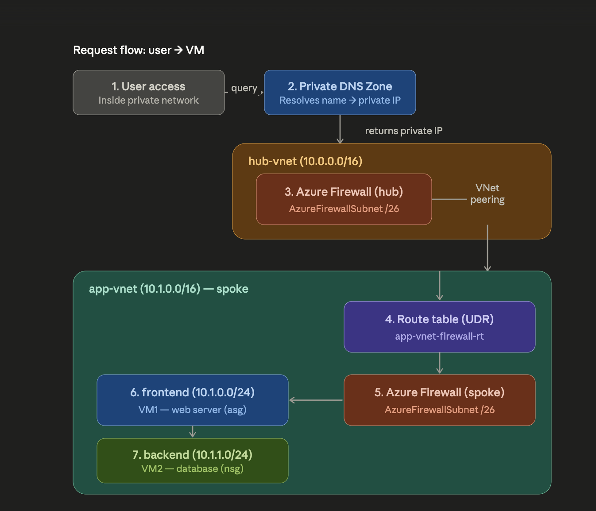
Explain by Claude (I don't think I can explain it better LOL)
What is hub-and-spoke used for?
Hub-and-spoke is a network architecture model that helps organize multiple VNets in a clean and cost-effective way. Instead of having each VNet provision its own shared services such as firewall, gateway, or DNS (which is both expensive and hard to manage), you consolidate them into a central VNet called the hub. The application VNets (called spokes) only hold their own workloads and "borrow" the shared services from the hub. In this architecture, hub-vnet (10.0.0.0/16) acts as the hub hosting the shared Azure Firewall, while app-vnet (10.1.0.0/16) is the spoke containing the application (the frontend and backend VMs). The main benefits are centralized security control, lower cost by avoiding duplication of expensive services, and easy scalability — adding a new spoke simply requires peering it to the hub.
Why do we need Virtual Network Peering?
By default, two different VNets are fully isolated and cannot communicate with each other, even when they're in the same region or subscription. VNet Peering is the mechanism that connects two VNets so they can route traffic to each other over private IPs, traveling across Microsoft's backbone infrastructure instead of going out to the internet. In a hub-and-spoke model, peering is mandatory: without peering between the hub and the spoke, the spoke cannot send its traffic through the Azure Firewall located in the hub. In other words, peering is what turns separate, isolated VNets into a unified hub-and-spoke architecture.
Exam Gotchas
- ExpressRoute does not go via internet → question "secure private connection" = ExpressRoute.
- VPN Policy-based not support Point-to-Site.
- Active-Active VPN Gateway = 2 tunnel, high availability.
- ExpressRoute Global Reach: connect 2 on-prem sites via Azure backbone (no need internet).
- Question "consistent latency, high bandwidth" = ExpressRoute.
- Question "quick setup, cost-effective" = VPN Gateway.
- Specific subnets allowed into PAAS (Ex: Azure SQL Database) = Service Endpoint
- Private IP for service in VNet / Disable public access = Private Endpoint
- Filter IP/Port in VNet/Subnet = NSG
- Again, NSG = firewall rules (allow/deny by IP, port, protocol). ASG (Application Security Group) = a logical group tag for NICs/VMs, so rules can reference a group by name instead of listing every IP.
- DMZ = buffer / barrier between external and internal.
- A virtual network can have only one VPN gateway.
- 2 VNet talking to each other = Peering.
- Spoken uses the hub's shared VPN/ExpressRoute gateway to return to on-premises = Gateway Transit.
- Azure Load Balancer = Layer 4 (TCP/UDP). Application Gateway = Layer 7 (HTTP/HTTPS, URL/path routing, WAF, SSL termination, web application)
- You can assign public IP to LB/NIC
Enhanced after fail first exam
Virtual Network Gateway or VPN gateway, to connect between 2 Vnet using VPN gateway:
1. add new subnet for vpn gateway in each VNET
2. create virtual network gateway with subnet you just created. Create/use exists First and Second Public IP for it (second IP for HA i guess?)
3. create virtual network gateway again for second vnet
4. adding network gateway connection between 2 vpn gateway we just created, remember to change Autonomous system number (ASN) if not we will fail!
5. Create Connection between 2 vpn gateway, connection type: VNet-to-VNet, remember to choice correction for 2 of your VNet
6. Review at connections panel.
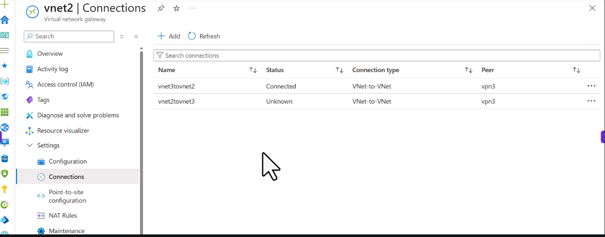
- We are able to auto register domain for VM when we created VM via option "Enable Auto Registration" (In Private DNS Zone).
- We can group multiple rule to Application Security Group(ASG), and allow traffic to ASG is much better than hardcode IP in NSG. For ASG we have to create new ASG as a resource. And go to VM --> Networking --> Config the ASG --> Link VM to specific ASG, 1 VM can be attach more than 1 ASG. After that we can create new Inbound Security Rule in NSG with destination is ASG. Picture for example:
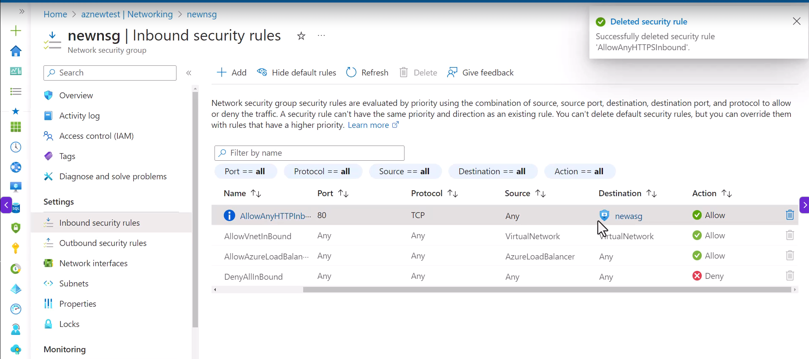
Again ASG really is just an abstraction of the destination instead of specifying a list of IP addresses.
- Connection troubleshooter: Enter via VM --> Help --> Connection Troubleshoot, select source which is current VM and destination which is VM we can't connect from current VM, we are able to use TCP/ICMP for probe settings. When we click run diagnostic tests, it deployed an agent to the VM and take couples minute. Example:
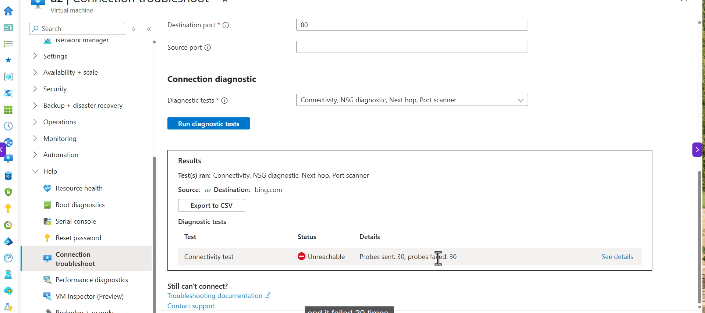
- You can not create "Basic SKU" for Azure LB. Forget about "Gateway SKU".
- Standard LB supports: Zonal (in one zone) + Zone-redundant (across zones)
- Azure LB = Layer 4 (TCP/UDP)
- Azure Application Gateway = Layer 7 (HTTP/HTTPS, WAF)
- Azure Front Door = Global LB, SSL offloading, CDN. So for SSL offloading, we can call TLS Termination, it means Front Door/LB will handle encrypt/decrypt HTTPS for backend server, so backend server we only need to use HTTP, no need double encrypt while LB/FrontDoor already help you!
- Traffic Manager = DNS-based traffic redirection. Like you come from USA it will redirect you to USA region, you come from Vietnam, it will redirect you to Southeast Asia region
- Holy shiet. Azure provide some good shit. For example this link have a button that "Deploy to Azure" and after we logged into portal of azure:
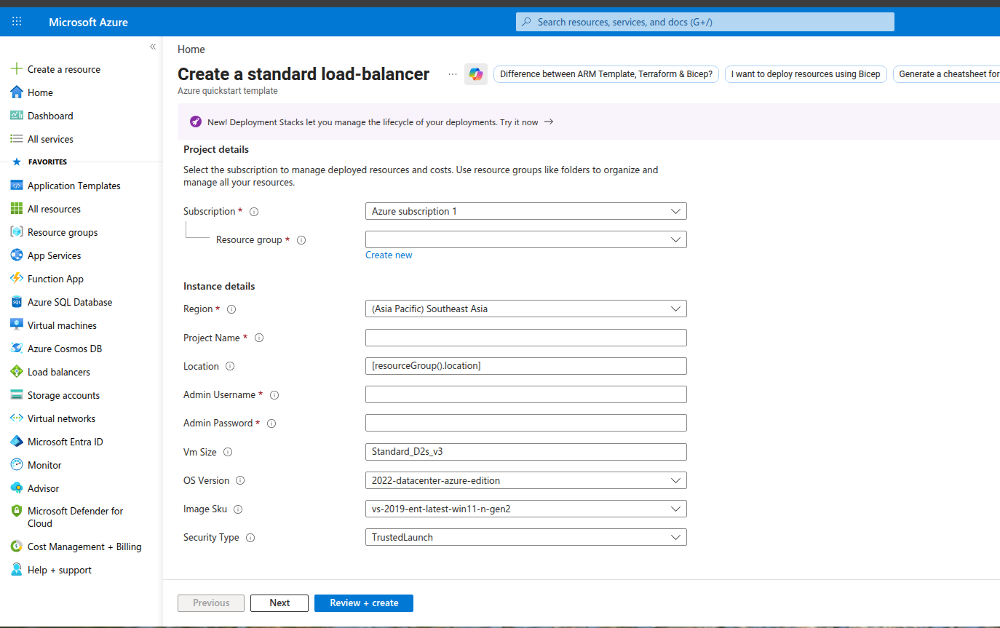
- Monitor -> Logs: you can query for diagnostics issue and there are some template for those query right in portal UI
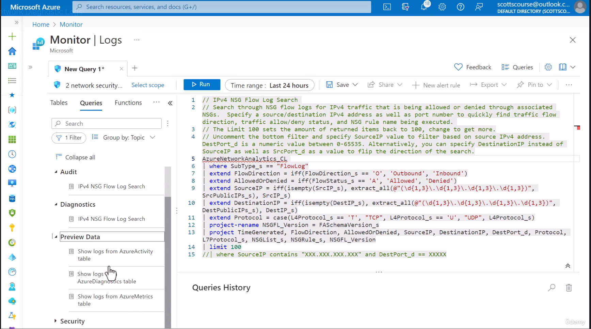
- Capture actual packets, TCP handshake, payload details --> Packet capture of Network Watcher
- Inbound internet --> private IP/port, always use DNAT rule in Azure Firewall, bro!
- Private endpoint alway create record when Private DNS zone linked, no need tick option "auto-registration" like in VM.
- VNet peering not auto share DNS zone link. Hub link zone != spoke link zone, need to link VNet seprated
- Subnet delegation = subnet used for only 1 service, not share with VM or other resource.
- Allow gateway transit (VNet with Gateway) + Use remote gateways (VNet have no gateway) = VNet spoke useable VPN/ExpressRoute of Hub, no need any extra configuration or UDR.
- Route/Advertise 0.0.0.0/0 via ExpressRoute, all traffic (internet + Azure Paas public endpoints) go through on-premises. VM totally lost direct internet access
Domain 5 - Monitor & Backup
Quick Mapping from AWS for Backup xD
AWS Azure
───────────────────────────────────────────────────
AWS Backup → Azure Backup
Backup Vault → Recovery Services Vault
AWS DRS / CloudEndure → Azure Site Recovery (ASR)
EBS Snapshots → VM Backup (disk snapshots)
Backup Services
| Service | What |
|---|---|
| Azure Backup | Backup VMs, databases, files (daily, point-in-time) |
| ASR (Azure Site Recovery) | Replicate VMs to another region, failover when DR |
Verdict: Azure Backup = AWS Backup, ASR = DRS (AWS Elastic Disaster Recovery).
Resource Reference:
Azure Backup
So there is something need to be understand first:
- Azure Backup = Service, like EC2 xD
- Vault = Location where contain and manage backup data + policies
There are 2 type of vault in Azure backup:
- Recovery Services Vault: Older, used for Azure VM, SQL in VM, Azure Files, on-prem (MARS agent)
- Backup Vault: Newer, used for Azure disk, Azure Blobs, PostgreSQL,AKS
Basic flow generated by AI xD:
Azure Backup service
└── Recovery Services Vault ← We create this!
├── Backup Policy (schedule, retention)
├── Backup Items (VM1, VM2, SQL DB...)
└── Backup Data (actual data stored here)
Monitoring
An Action Group defines what actions to take when an alert is triggered (e.g., send email, call webhook, run automation). For example: an Alert Rule monitors CPU usage > 90% on a specific VM → when triggered, it invokes an Action Group that sends an email notification.
Quick Mapping from AWS CloudWatch
AWS Azure
───────────────────────────────────────────────────
CloudWatch → Azure Monitor
CloudWatch Metrics → Metrics
CloudWatch Logs → Log Analytics Workspace
CloudWatch Logs Insights → Kusto Query Language (KQL)
CloudWatch Alarms → Alerts
CloudWatch Agent → Azure Monitor Agent
X-Ray → Application Insights
Resource Reference:
Enhanced after fail first exam
- Monitor need agent installed on VM Window or Linux to gather data and send to Azure to display.
- We can enable diagnostic for specific resource or resource group.
- For VM, we can turn on diagnostics in order to get the various operating system level metrics outside of the virtual machine. And the logs we get from "Insight" (need to enable it) which will collect the data and send to Azure for view, which is basically the agent will read/extract data from "Event Viewer" (VM itself) and send to monitor for centralized monitoring that we can run queries on.
- We can create dashboard in Monitor -> Metrics with specific metrics we want to visualization.
- For query, we need to select scope resource that we gonna do query log in there (Monitor -> Logs)
- For Azure Backup, we need to create a policy and inside that fucking policy we have backup schedule, instant restore (retain instant recovery for snapshots for x days), retention range (default 30 days).
- For manually, we need to create recovery services vault (is a storage account that has certain rules on it because it is specially for backup).
- File recovery from backup, choose restore point + download script to browse and recover files (it basically mount a restored disk for you in window for exxample) then in step 3 you have to click on button unmount disk to remove backup disk, hmm this is pretty good feature without remember syntax.
- For full restore of VM, we use option restore VM which is next to "File Recovery" with restore type like create new virtual machine with some information need for restore VM
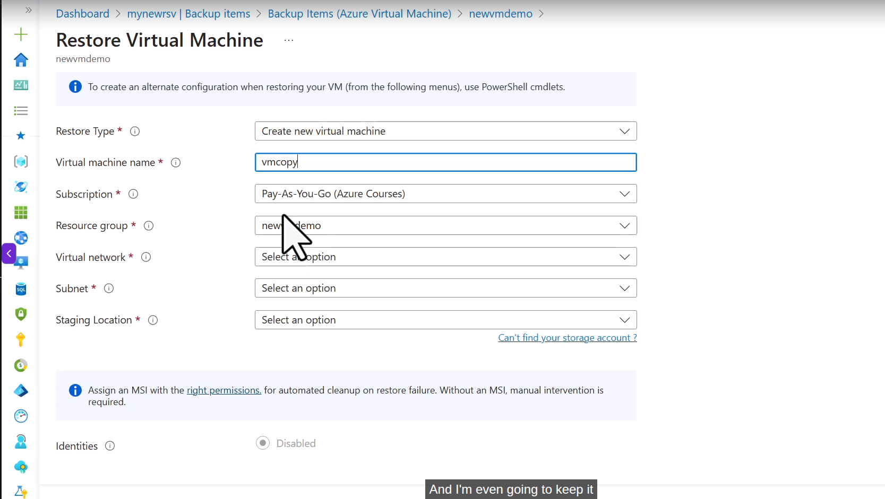
- For restore on-premises, install Microsoft Azure Backup Server (MABS) to make it happens, remember MBAS only for on-premises?
- In Backup Jobs, we can find information related about that backup.... Also you can query logs for backup jobs...
- Azure backup have soft delete enable by default, free for 14 days
- Azure Disater Recovery, we can start VM replication for another Azure region in VM --> Disaster Recovery and yeah data transfer will be charge ( will required brand new RG,VNet..)
- We also have test failover for site recovery job which will help us to validate it, what a great feature if we do this on-premises, will take shit load of time for automation.
- Identity-based access = authenticate with Kerberos/AD, like traditional file server. A fucking table to remember:
| Service | Identity-based (Kerberos/AD) | Azure RBAC | Key/SAS |
|---|---|---|---|
| File shares | Yes | Yes | Yes |
| Containers (Blob) | No | Yes | Yes |
| Queues | No | Yes | Yes |
| Tables | No | Yes | Yes |
Exam Tip/Tricks
Summary of common pitfalls, this is not study guide. Only pattern to drop wrong answer xD.
Never, never, never ever skip free practice assessment available, if somethings are important, repeat 3 times!
1. "X replaces NSG/Firewall"
This is always wrong. Bastion, Private Endpoint, VPN Gateway, Front Door, App Gateway... not replace NSG. NSG is layer filter , always apply together.
2. VNet Peering
| Trap | Correct |
|---|---|
| Peering is transitive | Wrong. A<->B, B<->C does not imply A<->C |
Enable Use Remote Gateway in 1 side is enough |
Wrong, must be paired with Allow Gateway Transit with gateway side |
| 1 spoke use multiple remote gateway | Wrong, only one |
3. Storage Replication
See Domain 3 — Replication Types for the full picker table.
Pitfalls: "highest availability within a region" -> ZRS (not GRS). GRS is cross-region. G stands for GEO
4. Backup vs Site Recovery
- Azure Backup = data recovery (file, VM disk, DB) — RPO calculate by hour/day
- Azure Site Recovery (ASR) = disaster recovery (replicate VM into another region) — RPO/RTO low
Question "recover deleted file" -> Azure Backup. "Region down, switch to another region" -> ASR.
5. Recovery Services vault vs Backup vault (naming pitfall )
| Vault | Workload |
|---|---|
| Recovery Services vault (Old) | Azure VM, MARS agent (files/folders/system state on-prem), SQL/SAP HANA in VM, Azure File Shares |
| Azure Backup vault (New) | PostgreSQL, Blob, Managed Disks, AKS, MySQL |
Keyword "files, folders, system state" -> alway are Recovery Services vault (Because attach with MARS agent). Don't be wrong with Azure Backup vault
Resource Reference:
6. RBAC vs Azure Policy
- RBAC = who did what (access)
- Policy = resource allows to exist or not (compliance, deny tag missing, deny SKU ...)
If questions are "enforce tag", "block region" -> Policy. Otherwise "grant read access" -> RBAC.
7. Four built-in roles
| Role | Manage resources | Assign roles |
|---|---|---|
| Owner | Yes | Yes |
| Contributor | Yes | Hell no |
| Reader | No | No |
| User Access Administrator | No | Yes |
Common pitfalls: exam question full manage resources but no assign roles -> answer is Contributor, NOT User Access Administrator (UAA). UAA is reversed role. Only assign roles, not going to have permissions to touch resources.
Trick:
- Owner = Contributor + UAA
- Contributor = Everything but not able to give permissions
- UAA = Only able to give permissions
8. RBAC scope — 4 levels
Management Group (top, contains multiple subscription)
↓ inherit
Subscription
↓ inherit
Resource Group
↓ inherit
Resource ← VNet, VM, Storage, Key Vault... individual resource.
Rules: Anything that contains Resource ID can be scope. Role assigned at higher scope, inherit to lower scope.
Pitfalls: List specific like Virtual Network, Storage Account make distractor, it still is valid scope (Level Resource).
Least privilege pattern: Instead assign Contributor at Subscription, assign role lower scope, like Network Contributor at that damn Virtual Network.
9. Locks
| Lock | what Lock |
|---|---|
| ReadOnly | Both modify + delete |
| CanNotDelete | only delete, still able to modify |
Gotcha: ReadOnly lock can break some operations thought it was read.
Example: list keys of Storage Account actually is post request.
Resource Reference:
10. Cost Management Pitfalls
- Reserved Instance = commit 1/3 year, reduced up to 72%
- Spot VM = cheap but can be evicted
- Hybrid Benefit = bring license Windows/SQL on-prem to Azure
If question predictable workload, lowest cost -> Reserved Instance. Batch job, can be restart -> Spot.
Resource Reference:
11. An overly absolute answer → 90% chance of being a distractor
Red flags in answer xD:
| Red flag | Why |
|---|---|
automatically |
Azure rare do for user, license, scaling, backup... all need config |
all / every |
All PaaS services, every VM in subscription —> Azure doesn't apply blanket |
only |
Each user can have only one license, only via portal Azure normally can have multiple ways |
never / cannot |
Azure dynamic, Absolute prohibitions are rare |
replaces |
Service A replaces Service B -> mostly they are individual layer |
12. Network Watcher — choose the right tool
| What | Tool |
|---|---|
| latency / packet loss VM<-->VM | Connection Monitor |
| Test 1 time: VM A can connect to VM B port X? | Connection Troubleshoot |
| This fucking packet would dropped by NSG or not? | IP Flow Verify |
| Effective NSG rules applied NIC | Effective Security Rules |
| Log all traffic via NSG | NSG Flow Logs |
| Draw network topology | Topology |
| Capture packet to analyze Wireshark | Packet Capture |
Need to remember:
- If question between two VMs + network -> reflex Network Watcher.
- If question continuous/monitor over time -> Connection Monitor.
- If question one-time test -> Connection Troubleshoot.
13. Azure Monitor — Metrics vs Logs vs Insights
Pitfalls: exam ask diagnostic between 2 specific VM -> Hell No, is NOT Insights. Insights is overview, not deep-dive.
Differentiation Insights vs Log Analytics when exam have analyze:
| Exam | Pick |
|---|---|
| view dashboard / performance overview / dependency map | Insights |
| analyze / query / compliance report | Log Analytics |
| across multiple VMs + summary data | Log Analytics |
| Update Management / patch compliance | Log Analytics (data put into workspace) |
| Change tracking | Log Analytics |
14. Private DNS + Private Endpoint + Hybrid resolution
Questions around Can VM/on-prem resolve name of private or not?. Need to remember scope of each components.
| Component | Scope | Note |
|---|---|---|
| Private DNS Zone | Global | 1 zone link, multiple VNet in every region/sub |
| VNet | Region | No cross-region |
| VNet Peering | Cross-region/cross-sub OK | Not share DNS by default |
| DNS Private Resolver (inbound/outbound endpoint) | Region | HA need resolver for each region |
| Private Endpoint NIC | Region (in subnet) |
Pitfall 1: Peering not share DNS
-
VNet-A have Private Endpoint + zone already link -> VM-A resolve OK. VM-B in VNet-B (peered) fail because zone haven't link to VNet-B.
-
Fix: link zone to both VNet. Zone is global, link is unlimit
Pitfall 2: Hybrid DNS need Private Resolver
- On-prem need to resolve
mystorage.privatelink.blob...→
# Generate with AI xD
On-prem DNS ──> conditional fwd --> DNS Private Resolver
(inbound endpoint, region X)
↓
linked Private DNS Zones
↓
return IP private endpoint
- Inbound endpoint = on-prem DNS forward query into Azure (resolve privatelink zones)
- Outbound endpoint = Azure VM resolve DNS on-prem via conditional forwarding rules.
- HA cross-region -> deploy resolver in 2 region
Common Scenario:
| Symptoms | Reason | Fix |
|---|---|---|
| VM resolve private endpoint to public IP | Zone haven't link VNet | Link zone into VNet |
| Spoke not resolve even peered hub | Zone link only hub | Link zone into spoke also |
| On-prem resolve -> public IP | Don't have hybrid DNS | Deploy DNS Private Resolver and conditional fwd |
| HA cross-region hybrid | Resolver region-bound | Resolver in 2 region |
| Zone in different sub without link | Cross-sub permission | Provide Network Contributor for zone |
Resource Reference:
15. Azure Files vs Azure Blob Storage
Azure files when: file share / shared files / mount/ SMB (Access via mount, smb...).
Azure blob storage when: object / blob / images / unstructured data (Access via Rest API/URl).
Taking the Exam
From my experience preparing for cloud certs, AZ-104 feels harder than AWS SAA / GCP ACE at the associate level, broader scope and tons of edge cases xD
Even you can access https://learn.microsoft.com/ but should use only for verifying information like plans, very slow and time consuming, like watch document during CKAD/CKS/CKA exam!
Fuck this exam, it was hard AF. No idea I can complete this or not!!!
Schedule exam here
Random useful comment from Youtube I think, 9 months ago, so it maybe like September-2025 this comment appears.
Just Passed Today. Most of question were around File/Blob Storage Access Tier and LifeCycle. RBAC Role assingment, AzCopy, Recovery service vault, LoadBalancer,VNET . Thanks TechBlackBoard for providing compiled question and pattern. 15-20% in actual exams questions were almost same from the video. There will be 50 questions which include 40 normal question and 2 not skipped question set of 3 and 3 which we cant review at end and 1 case study having 4 questions. Total Time is 100 minutes. Now these days microsoft allows the open notebook so that we can use the micosoft.learn portal in exam and that is too helpful. you can review the price tier and static content for various azure services.
Update 1st try in June-04-2026: failed with score 622/1000. It is just hard because I haven't prepare serious enough, still need more practice. The domain Compute and Storage I felt pretty confident, but domain Entra ID is really really bad for me =.= But I didn't watch serious AZ-104 Microsoft Azure Administrator - Complete Exam Prep, I skip a lot and spam only on practice test!
Start learning again in morning saturday June-06-2026! Plan for retake in June-14-2026!
Update: Fuckkkkkkk. 672/1000!
Secret weapon
Good shit for exam prep: very very quality
For example we have this fucking question (taken from secret weapon xD)
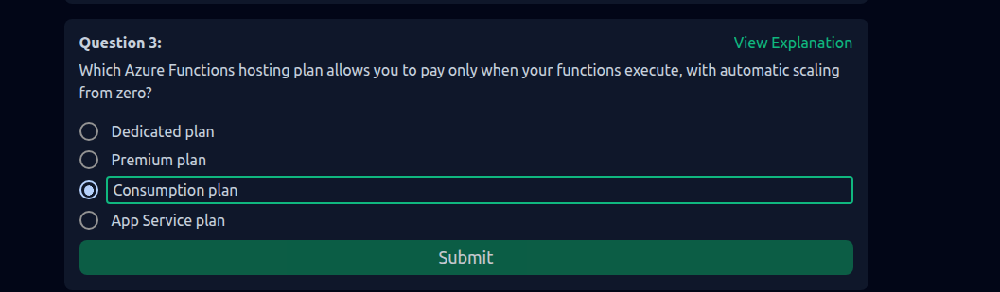
We can't remember everything for fucking sure. Let's me told you what I reliazed after practice for exam. It is how fucking we use https://learn.microsoft.com/ during exam.
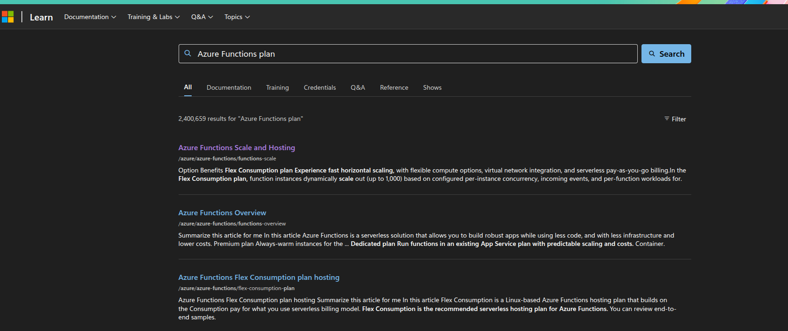
Enter first result found. Read as fast as you can, you will see Consumption plan here with key word "Pay for compute resources only when your functions are running (pay-as-you-go) with automatic scale on Windows."
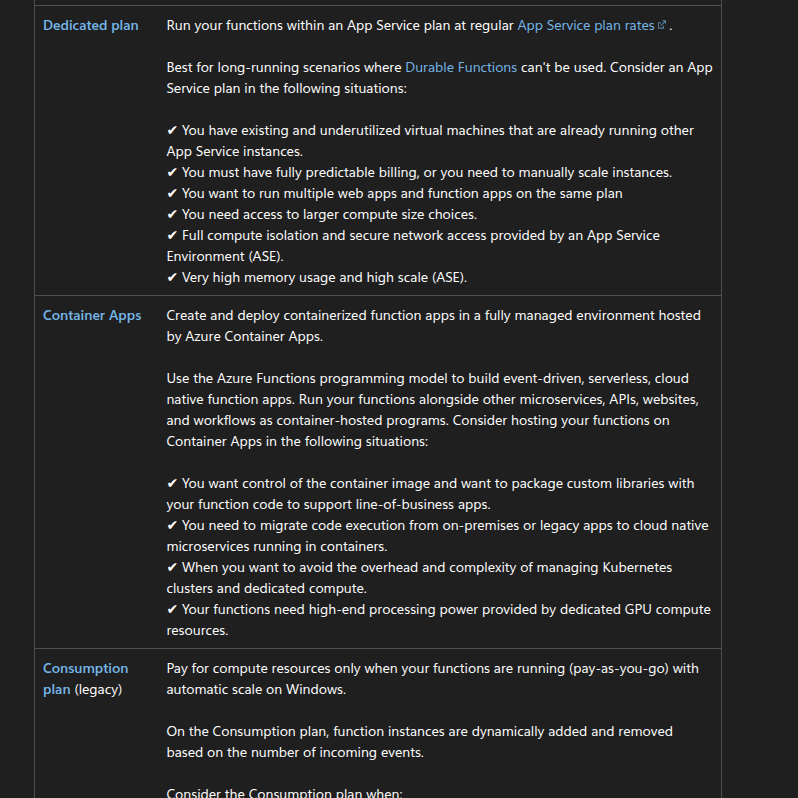
It is possible but remember use it fast, like under 120 seconds if you need to use document, because we have only fucking 100 minutes to resolve more than 50 questions!!!
If I don't remember wong, there is no question related to AKS service during exam, so you could save little time to prepare.
Conclusion
- Hard AF for people like me, who never working in single day with Azure Cloud!
- Need to learn skill how to use https://learn.microsoft.com/, we can not remember memory all stuff, we need to read the fucking document. But reading document during exam is fucking hard, that is why you need to practice it hard!
- Trust me, if you don't work in Azure but still want to try exam. Learn for it for non-stop 30 days before taking exam!
- This exam is fucking ridiculous, even you are able to read document, but time is fucking limited!!! holy shiet!!!
- Don't use microsoft during exam, it is fucking waste time that will lead to pressure! I was thought if I have 20 minutes to think, I would not fail :((
I would spam this word in every article related to certifications: Passing an exam, getting certifications is not an achievement for me, no fucking salary increase, I'm not proud if I have achieved certifications because I'm fucking lowkey, introverted person. I just have no idea what to do at sometime in every year, so instead of wasting time, I think learning is better for fucking sure. The exam is just 1 fucking gate or guardrail I created to make sure I understand enough what is fucking I'm learning. Wasted time and money (buy an exam to get cert) or be fucking serious about learning? If I need to compare, I simply compare my current year with myself from last year; that's all. LOL